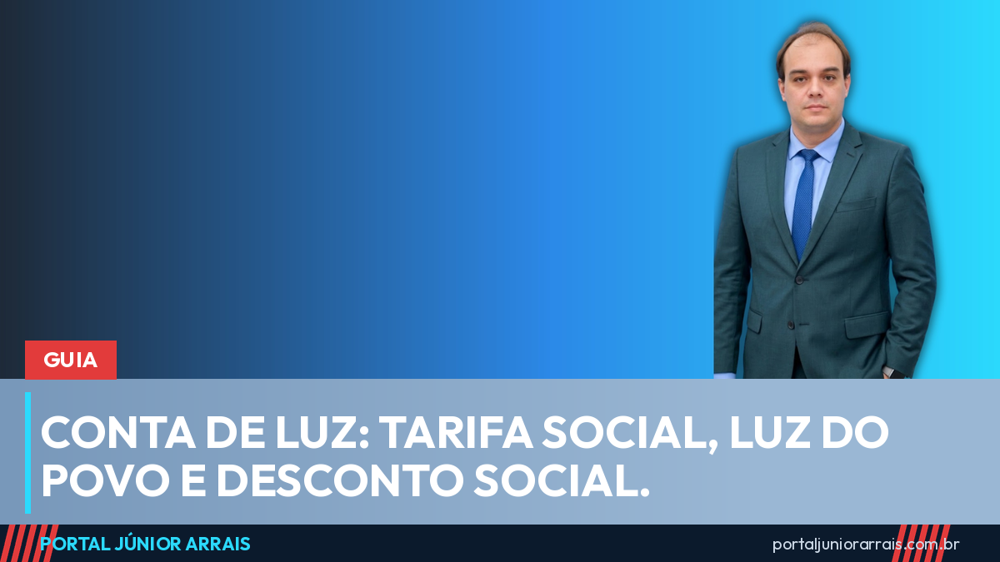

Conta de luz: Tarifa Social, Luz do Povo e Desconto Social — quem tem direito a cada um e como o desconto aparece

Tarifa Social, Luz do Povo, Desconto Social, bandeira amarela: os nomes aparecem juntos em toda notícia sobre conta de luz, e muita família não sabe dizer qual deles recebe, ou se recebe algum. Os três benefícios existem, estão ligados entre si e mudaram de regra entre 2025 e 2026. Este guia separa cada um, diz quem tem direito e explica por que o desconto pode sumir da fatura.
Tarifa Social: a porta de entrada
A Tarifa Social de Energia Elétrica é a política mais antiga (Lei nº 12.212/2010) e é o enquadramento que dá acesso ao formato atual de desconto. Tem direito:
- família inscrita no CadÚnico com renda de até meio salário mínimo por pessoa, R$ 810,50 em 2026;
- idoso a partir de 65 anos ou pessoa com deficiência que recebe o BPC e está no CadÚnico;
- família do CadÚnico com renda de até três salários mínimos que tenha em casa pessoa com doença ou deficiência cujo tratamento dependa de aparelho ligado na tomada;
- famílias indígenas e quilombolas inscritas no cadastro, e famílias atendidas em sistemas isolados da Região Norte.
Segundo a ANEEL, a Tarifa Social alcança cerca de 17 milhões de lares. Não é preciso pedir: a distribuidora cruza os dados com o CadÚnico e aplica o desconto na fatura. O que depende da família é manter o cadastro em dia (guia do CadÚnico).
Luz do Povo: consumo de até 80 kWh zerado
A Lei nº 15.235/2025, sancionada em outubro de 2025 a partir da Medida Provisória nº 1.300/2025, criou o programa Luz do Povo e mudou o formato do benefício para quem é da Tarifa Social: o consumo de até 80 kWh por mês deixou de ser cobrado. Dentro desse limite a família não paga pela energia consumida; a fatura traz apenas itens como a contribuição de iluminação pública do município e impostos estaduais, quando houver. O que passar de 80 kWh é cobrado apenas na parte que ultrapassou, sem perder a gratuidade da faixa inicial. A gratuidade vale desde 5 de julho de 2025 e alcança cerca de 4,5 milhões de famílias. Veja conta de luz zerada: quem tem direito.
Desconto Social: cerca de 12% para quem ganha um pouco mais
Desde 1º de janeiro de 2026 existe o Desconto Social de Energia Elétrica, voltado a quem não se encaixa na Tarifa Social: famílias do CadÚnico com renda entre meio e um salário mínimo por pessoa e consumo de até 120 kWh mensais ficam isentas de um dos encargos da conta, a Conta de Desenvolvimento Energético (CDE), e têm redução média de 12% na fatura. Também é automático. A ANEEL estimou 4,1 milhões de famílias alcançadas. Explicamos em o Desconto Social de 12% e comparamos os três formatos em qual é o seu.
Bandeiras tarifárias: o que muda todo mês
Independentemente do desconto, a ANEEL define a cada mês uma bandeira que reflete o custo de geração: verde (sem acréscimo), amarela e vermelha (patamares 1 e 2), com cobrança adicional por cada 100 kWh consumidos. Em 2026 a bandeira amarela vigorou por vários meses seguidos, encarecendo a conta de quem consome acima da faixa gratuita. Quem está na Tarifa Social tem a bandeira aplicada apenas sobre o consumo que ultrapassa 80 kWh. Acompanhe em bandeira amarela em setembro.
Por que o desconto some da fatura
- cadastro desatualizado: a revisão cadastral de 2026 prevê cancelamento da Tarifa Social para famílias convocadas que não atualizam o CadÚnico no prazo, e o aviso vem impresso na própria fatura (veja);
- endereço da conta diferente do endereço do cadastro: o cruzamento exige que a unidade consumidora esteja vinculada ao responsável ou a alguém da família cadastrada;
- renda acima do limite no cadastro, ou família que deixou de receber o BPC;
- consumo muito acima da faixa: o desconto continua, mas fica diluído numa conta alta, o que dá a impressão de que sumiu.
O que vem por aí
A reforma tributária prevê, a partir de 2027, a devolução integral da CBS paga na energia elétrica residencial para famílias do CadÚnico com renda de até meio salário mínimo por pessoa, o chamado cashback (entenda). E a abertura do mercado livre de energia para consumidores residenciais, que permitirá escolher o fornecedor, tem calendário próprio e ainda não muda a conta de quem tem Tarifa Social (veja).
Cuidado com golpe
Como os três benefícios são automáticos, qualquer oferta para "cadastrar sua casa na conta de luz zerada" é golpe. As versões mais comuns: visita de falso funcionário da distribuidora cobrando "taxa de adesão" ou pedindo foto da fatura e do documento; ligação oferecendo "desconto retroativo" mediante Pix; link para "regularizar a Tarifa Social" que captura senha do gov.br. Nenhum órgão do governo e nenhuma distribuidora cobra taxa para aplicar desconto na conta de luz, e a convocação para atualizar o cadastro nunca pede pagamento.
Se você acredita ter direito e o abatimento não aparece na fatura, se o desconto sumiu depois de anos ou se chegou cobrança que não entende, guarde as contas dos últimos meses e procure um profissional de sua confiança para verificar a situação do cadastro e a vinculação da unidade consumidora.
Guia permanente, revisado em 8 de setembro de 2026. Conteúdo informativo — não substitui orientação individualizada sobre o seu caso.
Júnior Arrais · Editor do Portal Júnior Arrais
Comunicador de Ubá (MG). Escreve todos os dias sobre benefícios sociais, INSS, trabalho e economia do dia a dia, a partir do Diário Oficial, de portarias e de fontes oficiais, em linguagem simples. Conheça a linha editorial e a política de correções do portal.